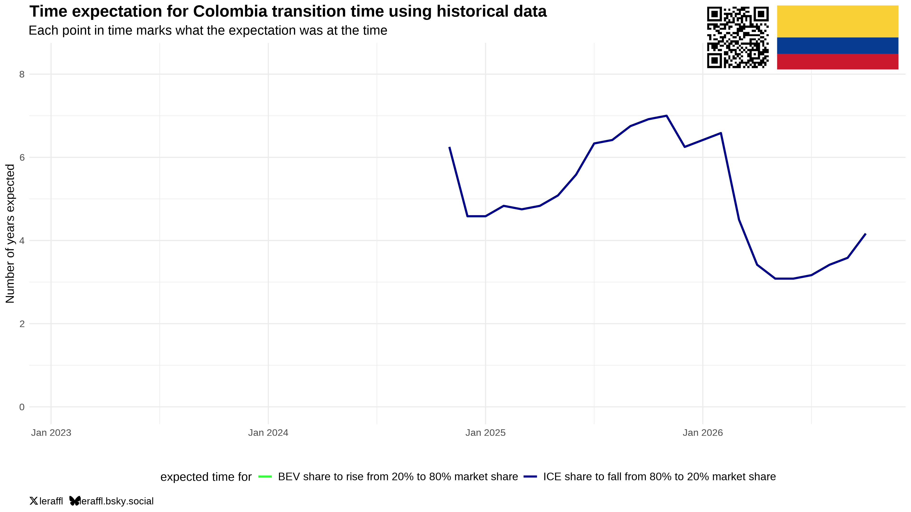

Colombia
Data through October 2026 · curve fitted 2026-11-05 PDF
Who gained, who lost
Lost share: Combustion and anything not split out 11.8. Gained: Battery electric 7.6 and hybrid 4.2. In percentage points of all new registrations.
Share of new registrations in the last 12 months (Nov 2025 to Oct 2026) against the 12 months before (Nov 2024 to Oct 2025). The changes add up to zero: what one row gains, the others lose. A row appears only where the source fills that column in every period of both windows; everything else is in the last row.
The latest periods
| Period | All registrations | BEV | BEV % | Hybrid % | Everything else % |
|---|---|---|---|---|---|
| Oct 2026 | 32,175 | 4,603 | 14.3 | 33.0 | 52.7 |
| Sep 2026 | 33,835 | 5,895 | 17.4 | 33.3 | 49.3 |
| Aug 2026 | 27,124 | 4,542 | 16.7 | 33.9 | 49.4 |
| Jul 2026 | 28,633 | 4,870 | 17.0 | 32.9 | 50.1 |
| Jun 2026 | 29,038 | 4,935 | 17.0 | 29.1 | 53.9 |
| May 2026 | 28,136 | 5,001 | 17.8 | 31.7 | 50.5 |
| Apr 2026 | 26,787 | 5,192 | 19.4 | 27.9 | 52.7 |
| Mar 2026 | 28,142 | 5,083 | 18.1 | 27.1 | 54.8 |
| Feb 2026 | 25,548 | 2,508 | 9.8 | 26.2 | 64.0 |
| Jan 2026 | 19,969 | 1,758 | 8.8 | 27.2 | 64.0 |
| Dec 2025 | 30,135 | 3,234 | 10.7 | 27.8 | 61.5 |
| Nov 2025 | 23,791 | 2,034 | 8.5 | 26.3 | 65.1 |
| Oct 2025 | 25,254 | 2,090 | 8.3 | 27.3 | 64.4 |
Shares are the column divided by the source's own total. The last column is what remains after the columns to its left. Newest first.
The fitted curve
| BEV share | Curve reaches it in | 95 % confidence interval |
|---|---|---|
| 10 % | 2025 | 2025–2027 |
| 20 % | 2026 | 2026–2029 |
| 50 % | 2029 | 2027–2037 |
| 80 % | 2031 | 2027–2047 |
| 90 % | 2032 | 2028–2052 |
The fit is provisional: its 80 % date moved by 5 years across recent re-fits. The interval is for the fitted line, point by point, and holds only if the transition keeps following an S-shape. How the intervals are calculated.
The gallery fits a generalized Weibull curve to the BEV share of each period: share(t) = 1 − exp(v1 · (t − t0)v2), t in calendar years. For Colombia: v1 = −3.403 × 10−6, v2 = 5.066, t0 = 2018, fitted through October 2026, model run 2026-11-05. This is the project's own model, not an official forecast. A policy change or a stall is not in it.
The gallery charts
 Combustion, battery electric and hybrid curves
Combustion, battery electric and hybrid curves BEV share with the fitted curve
BEV share with the fitted curve Market split, trailing twelve months
Market split, trailing twelve months

Time to reach each BEV shareRendered 2026-11-05 from data through Oct 2026. Charts are CC BY 4.0; open one for the full size.
Where the numbers come from
New-vehicle registrations for Colombia (all four-wheel types, not passenger cars only) from the ANDI/FENALCO automotive bulletin, based on the official RUNT registry.
Raw source
Go and check the numbers yourself:
ANDI Camara de la Industria Automotriz ↗
How the data flows
Each new or changed month re-renders the country. Shares are read from the CSV as column ÷ TOTAL and grouped into three curves. A generalized Weibull S-curve is fitted to the BEV and the ICE share, and the charts, the fitted parameters, the twelve-month totals and the uncertainty bands are rewritten.
- BEVBEV
- PHEV or EREV (plug-in hybrids, range extenders)Does the source split plug-ins from other hybrids?
- yesPHEV
- no — one combined hybrid figure (parked in HEV)ICEthe PHEV curve is left out, never drawn at zero
- HEV or MHEV (full and mild hybrids — no plug)ICE
- petrol, diesel, gas, flex-fuel, othersICE
Definitions & scope
| Acquisition | PDF — parsed from a published PDF |
|---|---|
| Vehicle scope | Wider than passenger cars: TOTAL, BEV and Hybrid count every new vehicle in the bulletin's "vehículos nuevos" total — SUVs, automóviles, pick-ups, camionetas, taxis, vans, commercial passenger and cargo vehicles, quadricycles; only motorcycles are excluded. The bulletin has no passenger-car-only BEV or hybrid figure, so the series cannot be narrowed to cars without mixing scopes. |
| HEV (full hybrids) | Combined hybrids (HEV + PHEV + MHEV) are reported in the HEV column; PHEV is left empty. |
| Backfill | each PDF carries ~2.5 prior years; older history via annual PDFs / maintainer backfill |
| Auth | none |
Variants
Each variant is its own series with its own CSV. Not every variant is charted in the gallery — the CSV is the authoritative record either way. BEV share and volume cover the last twelve months of each series.
| Variant | What it counts | Held | BEV share | Registrations | Raw data |
|---|---|---|---|---|---|
| Whole | All new vehicles in the ANDI/FENALCO bulletin's "vehículos nuevos" total — cars, SUVs, pick-ups, taxis, vans and commercial vehicles (motorcycles excluded). | 2019-01 – 2026-10 94 rows | 14.9 % | 333,313 | data/Colombia.csv |
History we hold
Every bar is the span actually present in our stored CSV — breaks in a bar are real gaps in the series, not rendering. Cadence is shown on the right.
Whole 2019-01–2026-10 (94 rows).
Which fuel columns this source fills
A blank column almost never means "no such cars" — it means this source does not split them out, and those vehicles are counted inside another column. Check the caveats for where they land.
| BEV | PHEV | HEV | PETROL | DIESEL | FLEXFUEL | ICE | OTHERS | |
|---|---|---|---|---|---|---|---|---|
| Whole | reported | not reported | reported | not reported | not reported | not reported | reported | not reported |
reported column exists but is zero in every row not reported by this source. Hover a cell for the row count.
Caveats
- Hybrids are a single combined bucket placed in the HEV column.
- Combustion is not reported at all: we derive ICE as TOTAL − BEV − HEV. There is no petrol/diesel split, so those columns stay empty.
- The source is a monthly PDF; the numbers ultimately come from RUNT.
- Since September 2026 the Cámara Automotriz page lists only year-end reports (2018–2025), so the monthly bulletin behind recent months is not linked from it. ANDI still publishes each month's PDF at its usual andi.com.co/Uploads/ address and we read it there; the figures are unchanged.
- Unlike most countries here, the totals are not passenger cars only: about one registration in ten is a pick-up, commercial vehicle, van or quadricycle (Aug 2026: 2,744 of 27,124). BEV and Hybrid are counted over the same wider total, so the shares stay consistent with each other.
- When ANDI has not put a month's PDF anywhere we can reach, that month comes from the figures in FENALCO's public press note for it (same RUNT data), and is marked provisional in the data file until a bulletin covering it is read. September 2026 is such a month.
- Printed under the charts: Source reports a single combined hybrid figure (no PHEV/HEV split): shown as 'Hybrid' in the fuel-split chart; counted within ICE in the BEV/ICE trajectory, which omits a PHEV curve because this source never measures one.
Using this card
Cite as: LeRaffl BEV Trajectory Gallery, Colombia model card, data through October 2026. https://leraffl.github.io/LeRaffl-Gallery/sources/colombia.html
Charts, fitted curves and text are CC BY 4.0: name the gallery when you use them. The registration figures stay with ANDI Camara de la Industria Automotriz. The card is rebuilt whenever the data changes, so quote it with its "data through" month.